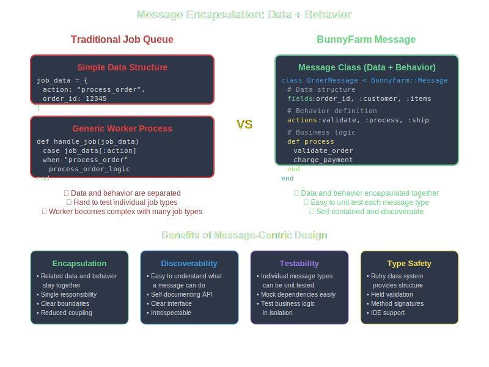
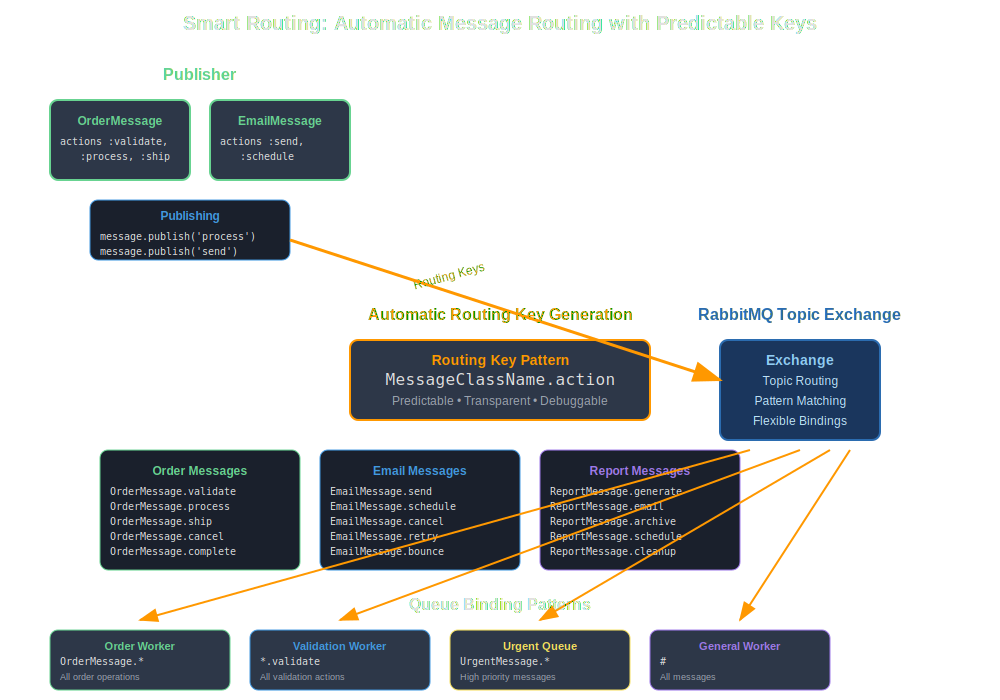
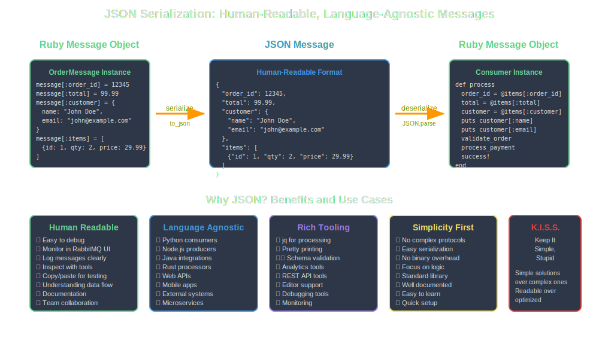
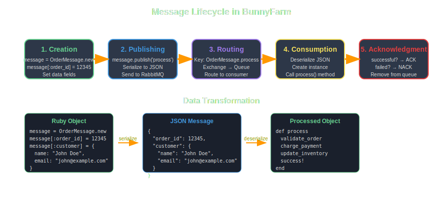

Basic Concepts¶
Understanding BunnyFarm's core concepts will help you design effective message-driven applications. This guide covers the fundamental principles behind BunnyFarm's architecture.
Message-Centric Architecture¶
BunnyFarm is built around the concept of messages as living entities. Unlike traditional job queues where jobs are simple data structures, BunnyFarm messages are full Ruby classes that encapsulate both data and behavior.

class OrderMessage < BunnyFarm::Message
# Data structure
fields :order_id, :customer_email, :items
# Behavior
actions :process, :ship, :cancel
def process
validate_order
charge_payment
update_inventory
success!
end
end
Core Components¶
1. Message Classes¶
Message classes inherit from BunnyFarm::Message and define:
- Fields: The data structure using the
fieldsDSL - Actions: Available operations using the
actionsDSL - Methods: Business logic for each action
2. Routing Keys¶
BunnyFarm uses a predictable routing pattern:
Examples:
- OrderMessage.process
- EmailMessage.send
- ReportMessage.generate
This makes routing transparent and debuggable.

3. JSON Serialization¶
All message data is serialized as JSON for: - Human readability - Easy debugging and monitoring - Language interoperability - Other systems can read/write messages - Simplicity - No complex binary protocols

Message Lifecycle¶

- Creation: Message instance is created with data
- Publishing: Message is serialized to JSON and sent to RabbitMQ
- Routing: RabbitMQ routes based on the routing key
- Consumption: Worker receives and deserializes the message
- Processing: The appropriate action method is called
- Acknowledgment: Success/failure determines ACK/NACK
Fields DSL¶
The fields DSL defines the expected data structure:
class CustomerMessage < BunnyFarm::Message
fields :name, :email,
{ address: [:street, :city, :state, :zip] },
{ preferences: [:newsletter, :promotions] }
end
This creates:
- Simple fields: name, email
- Nested objects: address with sub-fields
- Arrays: preferences as a list
Actions DSL¶
The actions DSL defines available operations:
class OrderMessage < BunnyFarm::Message
actions :validate, :process, :ship, :cancel, :refund
def validate
# Validation logic
end
def process
# Processing logic
end
# ... other action methods
end
Each action becomes a routable endpoint.
Data Access¶
BunnyFarm provides hash-like access to message data:
message = CustomerMessage.new
# Setting data
message[:name] = "John Doe"
message[:email] = "john@example.com"
message[:address] = {
street: "123 Main St",
city: "Boston",
state: "MA",
zip: "02101"
}
# Getting data
puts message[:name] # "John Doe"
puts message[:address][:city] # "Boston"
State Management¶
Messages track their processing state:
def process_order
validate_payment
if payment_valid?
charge_customer
success! # Mark as successful
else
failure("Invalid payment method")
end
successful? # Returns true/false for ACK/NACK
end
State methods:
- success! - Mark operation as successful
- failure(message) - Mark operation as failed with reason
- successful? - Check if operation succeeded
- failed? - Check if operation failed
- errors - Array of error messages
Configuration Patterns¶
BunnyFarm supports multiple configuration approaches:
Environment Variables¶
Programmatic Configuration¶
YAML Configuration¶
Error Handling¶
BunnyFarm provides built-in error handling:
def risky_operation
begin
perform_external_api_call
success!
rescue ExternalAPIError => e
failure("API call failed: #{e.message}")
rescue StandardError => e
failure("Unexpected error: #{e.message}")
end
successful?
end
Failed messages can be: - Retried automatically (RabbitMQ feature) - Sent to dead letter queues - Logged for manual inspection
Best Practices¶
1. Keep Actions Focused¶
Each action should have a single responsibility:
2. Use Meaningful Names¶
Choose descriptive names for clarity:
# Good
class OrderProcessingMessage
actions :validate_payment, :update_inventory
# Better than
class OrderMessage
actions :do_stuff, :handle
3. Handle Errors Gracefully¶
Always use proper error handling:
def process
validate_data
return unless successful?
perform_work
return unless successful?
finalize
end
4. Design for Idempotency¶
Make operations safe to retry:
Next Steps¶
With these concepts in mind, you're ready to explore:
- Message Structure - Deep dive into Fields and Actions DSL
- Configuration - Advanced configuration options
- Examples - Real-world usage patterns
- API Reference - Complete API documentation